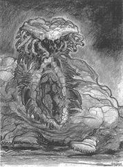

 This monster was built by Jon Lackey on a floor of the abandoned Masonic Temple in Glendale, California. It was made of plastic foam - mostly foamed in place, and fabric, over a chicken wire frame. Jon had no money, so it was financed by the film producers. I witnessed the monster in situ during the construction phase.
Jon built the structure of this monster so it could only be operated by a person of his tall, slender stature. He insisted that he, and he alone, would operate it during filming, and that he would get screen credits. The film's producers rejected his demands, possibly for legal or union reasons, and insisted the monster be modified to accommodate persons of lesser stature and greater girth.
This put Jon in a real huff, and he decided to confiscate the monster and hold it for ransom until his demands were met. He considered it entirely his property, though it had been financed by the film's producers, who also supported him during its construction - thus a "work for hire" and copyright to the producers. Whether Jon held the copyright to the drawing on this page, or whether it too was a "work for hire", is unknown to me.
I know these events to be true, as I was a member of the crew Jon recruited to "move the monster", in the dark of night, to parts unknown. Jon didn't tell us he was stealing it, but seeing his considerable delight in its being moved, we had our suspicions even at the time.
By this time, the film producers had enough of Jon, and the monster was rebuilt by someone more cooperative. That is why the credit (see top of page) is for "Monster Design" only. The replacement wasn't as good as Jon's monster, but for this film, does it matter?
The word got around about how difficult Jon was to work with, and that was the end of Jon's career in film. The final credit in this one release is his lifetime achievement. The film itself was awarded an entry in Wikipedia's List of films considered the worst. Alas, there is no mention of Jon Lackey on that page, or on Wikipedia's The Creeping Terror page.
The materials the monster was made of were very unstable, and it quickly disintegrated. Jon probably had photos, but they are now lost.
Andrew Grygus